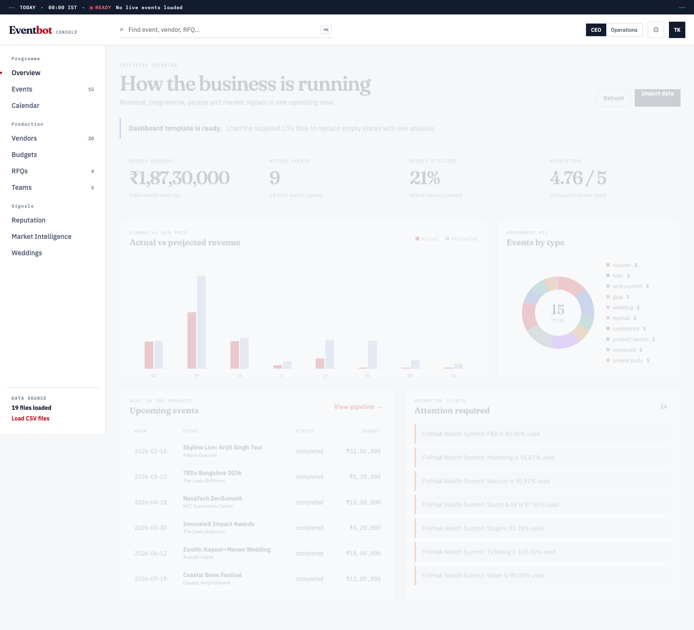
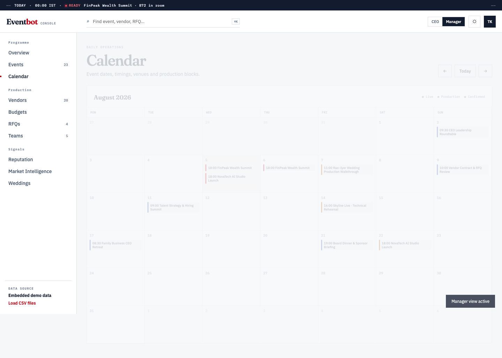
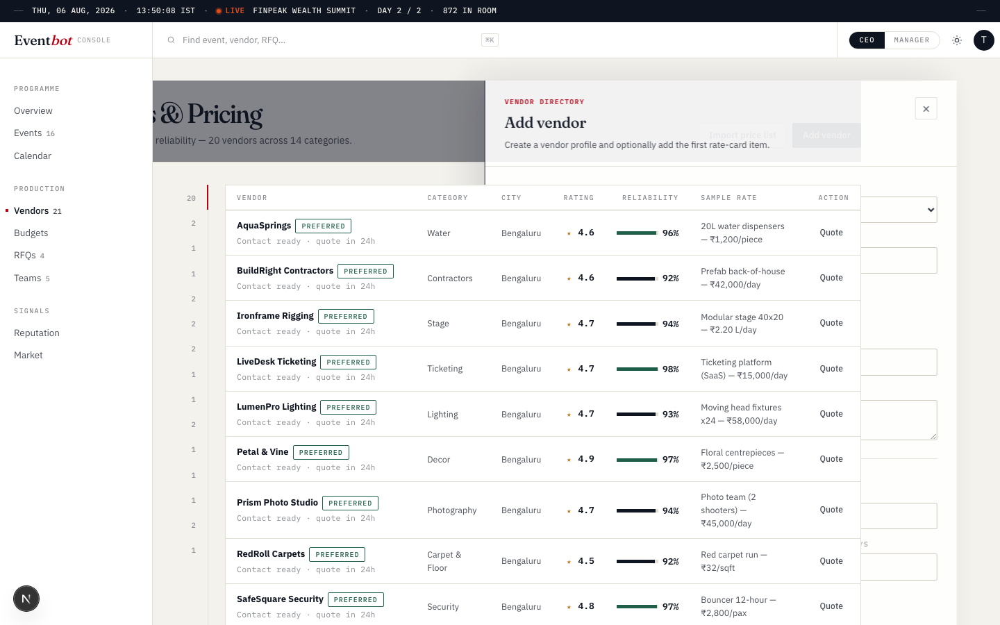

A unified command centre for revenue, event operations, vendors, budgets, teams, RFQs, reputation and market intelligence.
From boardroom decisions to the final load-out—without losing the detail that protects margin and reputation.
Most agencies coordinate high-value, time-critical work across spreadsheets, chat threads, inboxes and individual memory. Leadership sees the whole picture too late.
Commercial, production and vendor information lives in separate places.
Budget variance and quote risk surface after commitments are already made.
Calendar conflicts, team overload and vendor readiness are hard to see early.
Executives spend time collecting updates instead of making decisions.
“The real opportunity is not another event tool. It is a shared operating system for the entire agency.”
Booked and projected revenue, margin exposure, pipeline, reputation, capacity and market signals—designed for faster portfolio-level decisions.
CEOCOOCXOCFOSchedules, production status, vendor readiness, RFQs, budget lines, assignments and deadlines—designed for daily execution.
Event DirectorOperationsProducerEvery event links commercial value, people, suppliers, timing and customer outcomes.
Exceptions and risks are visible before they become expensive on-site problems.
Leaders can move from portfolio insight to the responsible workflow in one place.
Leadership sees the most important financial and operational signals first, with a CEO/Manager view built into the same product.


Eventbot connects what is happening, when it is happening, who owns it and what may block delivery.
A structured vendor directory brings reliability, pricing and operational readiness into one decision surface.

Portfolio revenue, pipeline, strategic risks, reputation and market opportunity.
Decision: Where should we focus, invest or intervene?
Event readiness, calendar pressure, vendor dependencies and team capacity.
Decision: Can we deliver every commitment reliably?
Planned versus actual spend, budget exposure, RFQ comparison and projected margin.
Decision: Where is profit at risk?
Client context, milestones, reputation, reviews and service-quality signals.
Decision: What protects trust and repeat business?
The interface changes emphasis by role—without creating separate versions of the truth.
Eventbot connects the operating lifecycle so every decision carries its commercial and delivery context forward.
Track opportunities, event types, competitors and expected value.
Set milestones, venues, attendance, owners and production windows.
Compare quotes, reliability, lead time and pricing before award.
Monitor assignments, capacity, spend and readiness during execution.
Capture reviews, performance signals and lessons for the next event.
Shared visibility reduces manual update collection.
Risk becomes visible while leaders can still change the outcome.
Vendor, budget and delivery knowledge stays with the agency.
| Executive priority | Eventbot capability | Operational signal | Business measure |
|---|---|---|---|
| Protect margin | Planned vs actual budgets; quote comparison | Variance and ceiling alerts | Gross margin by event; budget variance |
| Increase delivery reliability | Calendar, readiness and ownership | Conflicts, overdue milestones, blockers | On-time milestones; incident count |
| Improve procurement | Vendor rate cards, ratings and RFQs | Price + reliability comparison | Quote cycle time; vendor performance |
| Use teams effectively | Assignments and utilization | Overload and unassigned work | Utilization; overtime; capacity gaps |
| Strengthen client trust | Event context and reputation tracking | Reviews, NPS and service signals | Repeat business; NPS; average rating |
| Grow intelligently | Pipeline and market intelligence | Opportunity and competitor signals | Win rate; pipeline coverage; event mix |
Establish a baseline before rollout, then measure the change in reporting time, RFQ turnaround, budget variance, milestone adherence and vendor performance. Eventbot’s value should be proven with the agency’s own operating data—not generic promises.
Confirm roles, KPIs, workflows, data owners and success measures.
Onboard one team, a focused event portfolio and the core vendor catalogue.
Expand workflows, reporting and intelligence across teams and regions.
Executive intelligence.
Operational control.
One source of truth.